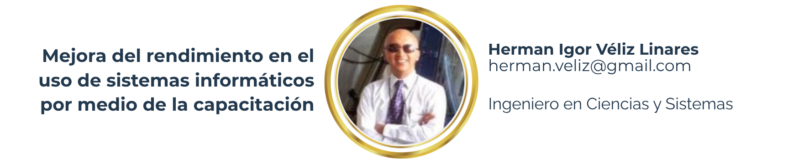

4 Mejora del rendimiento en el uso de sistemas informáticos por medio de la capacitación

4.1 Desarrollo del estudio
En el tema de la capacitación en el área de Sistemas de información o Informática, si no se capacita a un colaborador, o no se realiza este proceso de forma correcta y adecuada, existirán problemas de pérdida de productividad o el costo de rotación del personal del área. Otro inconveniente puede ser que los errores cometidos por los colaboradores, se den porque no fueron capacitados adecuadamente.
Otro inconveniente que se pueda dar es que en el área de Sistemas de Información o Informática, los colaboradores no realicen sus tareas o actividades designadas correctamente, por lo que puede haber problemas y/o errores en los sistemas desarrollados por ellos, lo que ocasionaría posiblemente malos procesos o cálculos realizados en los sistemas desarrollados y proporcionarían resultados erróneos, lo que da la pauta de que al tomar datos erróneos sin darse cuenta, los tomadores de decisiones cometan errores.
Además, los colaboradores no están debidamente capacitados; según sus expectativas pueden llegar a frustrarse; esto les puede impedir alcanzar puestos superiores, y prefieran buscar trabajo en otras empresas que les ofrezca lo que buscan, especialmente en el tema de capacitaciones, para enriquecer sus conocimientos. Pero si siguen en la empresa, pueda ser que se vuelvan conformistas.
Rendimiento
Es una medida de las capacidades de la persona que ha sido capacitada, que expresa lo que este ha aprendido a lo largo del proceso de capacitación. También supone la competencia del capacitado para responder a los estímulos de la capacitación. En cuanto a rendimiento, existen distintas clasificaciones, pero en el presente trabajo se trata de tipos de rendimiento laboral, según el o los puestos de trabajo a los que va dirigida la capacitación. Para ello se debe definir claramente el perfil del puesto a evaluar el rendimiento.
Plan de capacitación
Según Chiavenato, el plan de capacitación es un proceso a corto plazo aplicado de manera sistemática y organizada, mediante el cual las personas obtienen conocimientos, aptitudes y habilidades en función de objetivos. La capacitación es una parte esencial dentro de las empresas, ya que los colaboradores requieren tener a la mano las herramientas y recursos más actualizados para afrontar los procesos laborales de la actualidad.
Infraestructura de capacitación
Si se quiere un área adecuada para una capacitación, hay que tomar en cuenta muchos aspectos importantes para su efectividad: se debe tener un área con suficiente espacio para el tamaño del grupo que se va a capacitar, contar con suficiente ventilación e iluminación, tener asientos cómodos para los participantes, suficientes escritorios con sus computadoras y ausencia de ruido a los alrededores.
4.2 Conclusiones
Se pudo determinar según los resultados de las encuestas, que no existe un bajo rendimiento de parte de los colaboradores del departamento de Informática.
Las empresas consultadas sí poseen un área física disponible y adaptable con todas las comodidades para los colaboradores que reciben las capacitaciones.
Según las empresas encuestadas, sí tienen la infraestructura y equipo necesario para poder impartir las capacitaciones.
Respecto de la actualización del o los programas para la capacitación, 4 empresas no cuentan con este proceso de actualización, 6 sí lo realizan.
En relación con las empresas que no lo realizan, indicaron que esto no influye en un bajo rendimiento de los colaboradores al momento de realizar sus actividades en su puesto de trabajo.
En la realización de los perfiles de los capacitadores, 3 de las empresas encuestadas dijeron que no los tienen, ya que quienes capacitan son empleados de la misma área. En el caso de las empresas que sí lo hacen, indicaron que han tenido buenos resultados al observar que los empleados sí han evolucionado en sus puestos de trabajo.
En cuanto al tema del diagnóstico del software que se utiliza para las capacitaciones, todas las empresas indicaron que sí lo hacen, ya que es el mismo software que emplearán durante sus labores.
No existe una metodología de capacitaciones en 4 de las 10 empresas encuestadas, por lo tanto esto puede influir en un bajo rendimiento.
Todos los factores investigados en el presente trabajo no influyen en un bajo rendimiento en los colaboradores de las empresas contactadas.
4.3 Recomendaciones
Para tener una capacitación y un capacitador acordes a las necesidades de acuerdo con el tema a capacitar, se debe elaborar un perfil del mismo.
Tener una metodología para la realización de capacitaciones, ayudará a que los colaboradores reciban una capacitación adecuada a las competencias necesarias para realizar sus labores.
Revisar un promedio de 4 veces al año los contenidos de los programas de las capacitaciones, para que haya buenos resultados en los distintos temas que el área de informática requiera.
Se debe mejorar el rendimiento de los colaboradores tomando en cuenta todo lo acá propuesto.
4.4 Referencias
[1] Carranza, V. M. (1981). Capacitación de los recursos humanos para su desarrollo dentro de la empresa. Guatemala. USAC.
[2] Castro Herrera, B. y Paredes, O. (1988). Capacitación: diseño tecnológico de cursos. México. Limusa.
[3] Fuentes y Fuentes, P. E. (1998). Administración de la capacitación. USAC, Guatemala.
[4] Morataya Abac, M. I. (2020). Capacitación del Contador Público y Auditor en la adquisición, inversión y rentabilidad de una franquicia de capacitación en informática. USAC. Guatemala.